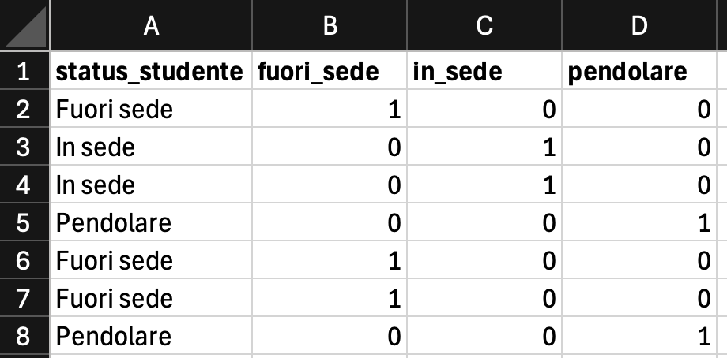
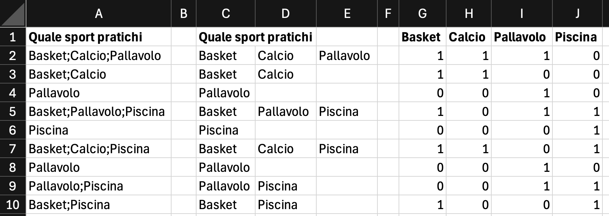
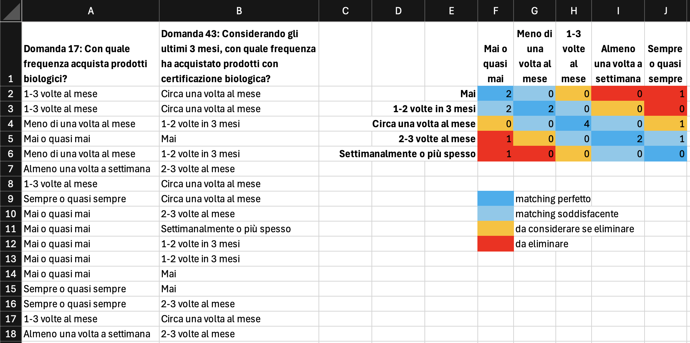

flowchart TD
A[1. Ispezione iniziale] --> B[2. Ridenominazione<br/>e standardizzazione]
B --> C[3. Gestione missing values]
C --> D[4. Controllo tipi di variabile]
D --> E[5. Trasformazione variabili]
E --> F[6. Outlier]
F --> G[7. Domande di controllo]
G --> H[8. Pulizia variabili testuali]
H --> I[9. Coerenza interna]
I --> J[10. Documentazione]
J --> J2[11. Verifica finale]
J2 --> K{Dataset analitico<br/>pronto?}
K -- No --> A
K -- Sì --> L[Analisi]
3 Preparazione e pulizia dei dati
Il data cleaning — la pulizia dei dati — è una delle fasi più importanti e più lunghe di qualsiasi analisi statistica. Consiste nell’individuare, correggere e documentare errori, incongruenze, valori mancanti, duplicazioni e formati non coerenti, con l’obiettivo di ottenere dati accurati, consistenti, completi e utilizzabili.
I riquadri delle fasi 4 e 5 dedicati alla cluster analysis e alla PCA anticipano temi dei due capitoli successivi: conviene tornarci dopo averli studiati.
ImportanteIl principio guida
Garbage in, garbage out. Nessuna tecnica analitica, per quanto sofisticata, può compensare dati di partenza incoerenti, incompleti o inattendibili. Nei progetti di analisi dei dati la preparazione richiede spesso più tempo dell’analisi vera e propria: è un investimento metodologico, non un’operazione accessoria.
3.1 Perché è cruciale
Dati incompleti, errati o mal strutturati compromettono l’affidabilità delle conclusioni. Gli effetti più comuni di una scarsa qualità del dato sono:
- stime distorte di parametri e test statistici falsati;
- relazioni spurie dovute a errori di codifica o duplicazioni;
- riduzione del numero effettivo di osservazioni utilizzabili;
- difficoltà di replicazione o confronto tra studi diversi.
Al contrario, un data cleaning ben eseguito aiuta a rendere coerenti fra loro fonti eterogenee, migliora la leggibilità di report e visualizzazioni, favorisce la replicabilità e permette di concentrarsi sulla sostanza dell’analisi.
3.2 Il workflow in undici fasi
Il processo è iterativo: ogni controllo può far emergere nuove problematiche che richiedono ulteriori verifiche.
3.3 1. Ispezione iniziale
Prima di intervenire occorre comprendere la struttura del dataset.
| Cosa verificare | Come |
|---|---|
| Numero di osservazioni e variabili | Confronta con quanto atteso dal disegno dell’indagine |
| Colonne vuote, ridondanti o prive di significato | Scorri le intestazioni nel foglio dati |
| Tipi di variabili (Continua, Ordinale, Nominale, ID; dati interi, decimali o testo) | Verifica le icone accanto al nome colonna (tipo di misura) e, nell’editor di variabile, il tipo di dato (Jamovi non ha un tipo dedicato alle date) |
| Duplicati o errori evidenti | Ordina/filtra le colonne chiave |
| Campione di record | Scorri le prime e ultime 20 righe |
ConsiglioIn Jamovi
Nel foglio dati l’icona accanto al nome di ogni colonna indica il tipo di variabile. Doppio click sull’intestazione apre l’editor di variabile (vedi Tour dell’interfaccia) — è qui che si correggono nome, tipo, livelli e codifica dei missing.
3.4 2. Ridenominazione e standardizzazione dei nomi
Uniformare i nomi delle variabili riduce errori e migliora la leggibilità.
- Sostituire nomi lunghi con etichette brevi ma descrittive, evitando sigle criptiche: devono restare comprensibili anche dopo mesi e a colleghi diversi.
- Evitare (sia nei nomi variabile sia nelle modalità) spazi, caratteri speciali, accenti — usare l’underscore
_. - Applicare una convenzione coerente in tutto il dataset (es. snake_case minuscolo).
- Rinominare variabili generiche come
Var1oX3inprezzo_camera,data_prenotazione.
AvvisoTrabocchetto in Jamovi
Jamovi conserva sia il nome interno (Name) sia un’etichetta più descrittiva (Description). Conviene tenere nomi snake_case corti come Name e una descrizione in italiano leggibile come Description: il primo lo si vede nelle formule, la seconda nei report.
3.5 3. Gestione dei valori mancanti
I missing values sono una costante in quasi tutti i dataset. La loro gestione è delicata e va coerentemente documentata.
3.5.1 Strategie
- Analisi delle cause: distinguere fra
- MCAR (Missing Completely At Random) — la probabilità che il dato manchi non dipende né dai valori osservati né dal valore mancante: un questionario smarrito per un disguido postale;
- MAR (Missing At Random) — la probabilità che il dato manchi dipende da altre informazioni osservate, ma non più dal valore mancante una volta tenuto conto di quelle: i più giovani rispondono meno spesso alla domanda sul reddito, ma a parità di età chi ha redditi alti e bassi risponde allo stesso modo;
- MNAR (Missing Not At Random) — la probabilità che il dato manchi resta legata proprio al valore che manca: chi ha redditi molto alti evita la domanda sul reddito;
- strutturali — l’informazione non è prevista per quell’osservazione (es. “anni di esperienza lavorativa” in una domanda rivolta solo a chi lavora).
- Quantificazione: percentuale di valori mancanti (NA, not available) per variabile e per riga.
- Trattamento:
- rimozione di righe o colonne con troppi mancanti;
- imputazione (media/mediana per quantitative, moda per categoriche, modelli per imputazioni più sofisticate);
- codifica esplicita (“Non risponde”, “Non applicabile”) se l’assenza è informativa.
| Percentuale di NA | Indicazione orientativa |
|---|---|
| < 5% sulla variabile | Una quota contenuta si gestisce di solito senza conseguenze rilevanti, ma la scelta dipende dal meccanismo e dall’analisi prevista |
| 5–20% | Valutare il meccanismo, scegliere un’imputazione appropriata e verificare quanto i risultati cambiano al variare della scelta |
| > 20% | Serve particolare cautela: qualità del dato, meccanismo, possibilità di imputazione e rilevanza sostantiva vanno valutate prima di decidere un’eventuale esclusione |
Sono indicazioni orientative, non soglie decisionali automatiche: la strategia dipende dal meccanismo (MCAR, MAR o MNAR), da quanti e quali casi mancano, dall’analisi successiva e dalle informazioni ausiliarie disponibili.
AvvisoDocumentare sempre
Ogni decisione sui missing va annotata: influisce sulla validità delle analisi successive ed è centrale per la riproducibilità.
3.6 4. Controllo dei tipi di variabile
Tipizzazione corretta = analisi corretta. In AnalisiMercato (e in Jamovi in generale) i controlli sui tipi sono espliciti:
- l’Analisi delle Componenti Principali (PCA, Principal Component Analysis) accetta solo variabili numeriche come variabili attive (e come quantitative supplementari); le categoriali possono entrare soltanto come supplementari (colore del biplot, mappa di posizionamento);
- la Cluster Analysis accetta sia variabili numeriche sia categoriali: è la distanza a stabilire che cosa è ammesso (vedi il riquadro sotto);
- la Caratterizzazione usa
catdesse la variabile target è categoriale (nominale o ordinale) econdesse è numerica.
Più in generale:
- Le date, per le quali Jamovi non ha un tipo apposito, vanno registrate in un formato unico e coerente (es.
AAAA-MM-GG); per le analisi conviene ricavarne variabili numeriche (anno, mese, durate). - Le numeriche devono contenere solo cifre e simboli validi (attenzione a virgole/punti decimali).
- Le categoriche devono avere etichette coerenti.
- Distinguere nominali, ordinali e numeriche in modo chiaro: gli ordinali in Jamovi si codificano come Ordinale con livelli ordinati esplicitamente.
ImportantePreparare i dati per la cluster analysis: che cosa serve davvero
La base della segmentazione accetta direttamente variabili quantitative e categoriali, e i tipi vengono preservati lungo tutto il calcolo: le variabili qualitative non vanno ricodificate a mano. La preparazione si riduce quindi a scegliere la distanza coerente con i tipi presenti.
| Composizione della base | Distanza appropriata | Preparazione necessaria |
|---|---|---|
| Tutte quantitative | Euclidea, Manhattan, Mahalanobis | Standardizzare se le unità di misura differiscono (con Mahalanobis è superfluo: la distanza è già invariante alla scala) |
| Tutte categoriali | Sokal-Michener, Jaccard politomico | Nessuna ricodifica: le modalità entrano come categorie |
| Miste (quantitative + qualitative) | Gower | Nessuna ricodifica; la standardizzazione è superflua. Le binarie di presenza/assenza, codificate 0/1, vanno nella casella apposita |
| Binarie con zeri non informativi | Jaccard | Verificare che 0 significhi assenza |
Restano due avvertenze:
- applicare Euclidea, Manhattan o Mahalanobis a una variabile categoriale codificata con numeri è possibile e il modulo lo consente, con una nota di avvertimento: i codici entrano nel calcolo come quantità, cioè la modalità 3 dista dalla 1 il doppio di quanto disti dalla 2. È una scelta discutibile che vale la pena poter fare e poi discutere. Con modalità testuali il calcolo è invece impossibile e viene rifiutato;
- con una base che contiene variabili categoriali trattate come tali (distanze Gower, Sokal-Michener, Jaccard) l’R², la deviazione standard media dei gruppi (RMSSTD, Root-Mean-Square Standard Deviation) e l’indice di Caliński-Harabasz (CH) non sono definiti (si fondano sulla devianza rispetto ai centroidi) e restano vuoti, con una nota in tabella: per la scelta di \(k\) restano il dendrogramma e il Delta G. Con Euclidea, Manhattan o Mahalanobis, invece, i codici numerici sono trattati come quantità e gli indici vengono calcolati.
3.7 5. Trasformazione delle variabili
Spesso bisogna trasformare variabili categoriche in numeriche (o viceversa) per adattarle ai modelli o per semplificare l’interpretazione. Le trasformazioni devono mantenere il significato sostantivo e vanno documentate.
3.7.1 Da nominale a numerica — one-hot encoding (dummy)
Per ogni modalità si crea una variabile binaria che vale 1 se la modalità è presente per quell’osservazione, 0 altrimenti.

status_studente (colonna A) genera tre colonne binarie (B, C, D), una per ciascuna modalità
NotaQuante dummy: \(m\) o \(m-1\)?
Nei manuali si legge spesso che una nominale con \(m\) modalità si rappresenta con \(m-1\) dummy. È una regola dei modelli di regressione, che in questo corso non usiamo. Nelle analisi del corso le cose stanno così:
Cluster Analysis. La via più semplice è non usare le dummy: con Gower o con una distanza di matching le categoriali entrano direttamente, e ogni variabile conta una volta sola, qualunque sia il numero di modalità (Capitolo 25). Se si usano le dummy:
- per rappresentare tutte le modalità servono tutte e \(m\) le dummy, con l’euclidea e con le distanze per dati binari. Con \(m-1\) dummy, come nella regressione, la modalità omessa è codificata con tutti zeri e diventa un caso speciale: con l’euclidea, per esempio, chi ha quella modalità dista 1 da chiunque altro, mentre due persone con due altre modalità diverse distano \(\sqrt{2}\). La distanza fra due rispondenti dipenderebbe così da quale modalità si è scelto di omettere;
- se si standardizza, il peso cresce con \(m\). Lasciate a 0/1, le dummy non fanno pesare la variabile più del dovuto: con l’euclidea due rispondenti con modalità diverse differiscono sempre su due dummy, qualunque sia \(m\), e la variabile pesa al più quanto una variabile numerica standardizzata. Se però i dati richiedono di standardizzare, per esempio perché le variabili numeriche della base hanno unità di misura diverse, Standardizza le variabili nel modulo si applica anche alle dummy: ognuna diventa una variabile a varianza 1, e la nominale pesa come \(m\) variabili. Le modalità rare, poi, ricevono valori molto grandi (con una modalità scelta dal 3% dei rispondenti la dummy standardizzata arriva a circa 5,5): chi le ha finisce lontano da tutti, spesso in un cluster a sé. In questo caso ci sono tre strade. Usare Gower, che tratta direttamente sia le numeriche sia le categoriali e porta da sé le numeriche su una scala comune. Accorpare le modalità rare, così che le dummy siano di meno. Oppure tenere solo un sottoinsieme di dummy, per esempio quelle delle modalità più frequenti o più importanti per l’analisi: si perde informazione, perché le modalità escluse finiscono tutte a zero e diventano indistinguibili fra loro, come un’unica modalità «altro», ma la variabile pesa come il numero di dummy tenute invece che come \(m\) variabili;
- con la Mahalanobis ne servono \(m-1\): con tutte e \(m\) le dummy, che sommano sempre a 1, la distanza non è calcolabile e il modulo si ferma con un messaggio.
PCA. Una nominale, così com’è, non può essere variabile attiva: la PCA accetta come attive solo variabili numeriche. Le sue dummy invece sì, perché valgono 0 o 1, e una variabile con due sole modalità (per esempio Sì/No) può entrare senza problemi come una sola dummy. Con molte modalità, però, la standardizzazione non basta, per due motivi:
- ogni dummy conta come una variabile, quindi la nominale pesa come \(m\) variabili nella varianza totale;
- le dummy della stessa variabile si escludono a vicenda (chi ha una modalità non ha le altre), quindi sono correlate fra loro, e la PCA spende componenti solo per separare le modalità.
Un esempio: aggiungendo ai sei item del questionario di soddisfazione di § T-05 le sei dummy di una variabile che con gli item non ha nulla a che fare, la quota di varianza spiegata da PC1 scende dal 67,6% al 34,1%, e le componenti con autovalore maggiore di 1 passano da 2 a 7: le cinque in più servono solo a separare le modalità.
Le strade sono due. La più comune è usare la nominale come variabile supplementare: le sue modalità compaiono sulla mappa come baricentri, senza influenzare le componenti (§ P-24). L’altra, se la variabile deve contribuire a costruire le componenti, è tenere solo un sottoinsieme di dummy, come nel clustering, per esempio una sola dummy per la modalità che interessa contro tutte le altre («studente lavoratore» sì/no). Nell’esempio, una sola dummy senza legami con gli item aggiunge una sola componente, con autovalore 1, e lascia intatte le altre; la quota di PC1 scende comunque un po’, dal 67,6% al 58,0%, perché la varianza totale passa da 6 a 7. Una dummy legata agli item, invece, entra nelle prime due componenti senza crearne di nuove. Il prezzo è lo stesso del clustering: le modalità escluse diventano indistinguibili fra loro.
Caratterizzazione dei cluster. Una nominale si usa così com’è: è il modulo a confrontare ogni modalità con il totale del campione (§ P-19).
Gestione di variabili con molte modalità (tipicamente \(m \geq 5\)):
- Raggruppamento delle modalità: aggregare categorie simili o molto rare prima della codifica, purché l’accorpamento abbia una giustificazione sostantiva e non sia solo una comodità di calcolo.
- Tenere solo alcune dummy: le modalità escluse finiscono tutte con zeri, indistinguibili fra loro, come se fossero accorpate in un’unica modalità «altro». La variabile che entra nell’analisi non è più quella originale, quindi la scelta va motivata: ha senso se le modalità escluse non interessano all’analisi, o per limitare il peso della variabile quando si standardizza (vedi il riquadro sopra). Nel clustering, se le categoriali sono molte, l’alternativa è una distanza adatta ai dati misti come Gower.
3.7.2 Da ordinale a numerica — codifica diretta o sostantiva
Codifica numerica diretta: assegna un intero a ogni categoria. Cautela: si assume che le differenze tra modalità consecutive abbiano intensità costante, proprietà non garantita dalla scala ordinale.
Codifica basata su valori sostantivi: quando la natura dell’ordinale lo consente, si assegna un valore numerico che riflette una quantità reale.
ConsiglioEsempio — Classi di età
Per classe_eta è opportuno assegnare il valore centrale di ciascuna classe:
30-50→ valore centrale 40oltre 50→ la classe è aperta superiormente e un centro non esiste. Se serve un valore numerico se ne sceglie uno rappresentativo, per esempio 65, ma la scelta va motivata sulla distribuzione osservata, su dati esterni o su conoscenza di dominio
ConsiglioEsempio — Titolo di studio
Anziché numeri arbitrari (1, 2, 3, …), interpretare titolo_di_studio come proxy del grado di istruzione formale e assegnare gli anni di scolarizzazione:
| Modalità | Anni |
|---|---|
| Nessun titolo | 0 |
| Licenza elementare | 5 |
| Licenza media | 8 |
| Diploma superiore | 13 |
| Laurea triennale | 16 |
| Laurea magistrale | 18 |
Questa codifica riflette una metrica oggettiva e interpretabile.
3.7.3 Da numerica a categorica — discretizzazione
- Suddivisione in intervalli: classi di valori (es. fasce d’età: 18–30, 31–50, oltre 50; classi di reddito: basso/medio/alto).
- Binarizzazione su soglia: 1 sopra e 0 sotto un valore critico (media, mediana, soglia di dominio).
Quando ha senso discretizzare:
- Comunicabilità: facilita la lettura di tabelle e report per stakeholder non tecnici.
- Focus sull’aspetto qualitativo: quando l’interesse è “sopra/sotto” più che il valore esatto.
- Rappresentazione semplificata di relazioni non lineari: le differenze fra fasce emergono anche quando un modello lineare sulla variabile continua non le coglierebbe. Va però ricordato che discretizzare butta via informazione, e non è l’unico modo di trattare una relazione non lineare.
ConsiglioEsempio — Voto d’esame
Se l’obiettivo è capire i fattori associati al superamento dell’esame (non al voto specifico), si binarizza:
voto < 18→ 0 (non superato)voto ≥ 18→ 1 (superato)
AvvisoCosto della discretizzazione
Si perde sempre informazione rispetto alla variabile continua. Va bilanciato il guadagno di interpretabilità con la riduzione del contenuto informativo.
3.7.4 Variabili a risposta multipla — one-hot encoding in due fasi
In molti questionari una domanda permette di selezionare più opzioni contemporaneamente: in formato grezzo la risposta è una stringa con più modalità separate da un delimitatore. Non è direttamente utilizzabile.

Procedura:
- Separazione delle modalità: identificare il delimitatore (virgola, punto e virgola, pipe) e suddividere la stringa in colonne separate. In Excel: Dati → Testo in colonne → specificare delimitatore; in Fogli Google: Dati → Dividi il testo in colonne.
- Creazione di variabili binarie: per ciascuna delle \(m\) modalità possibili, una nuova variabile binaria che vale
1se la modalità è presente,0altrimenti.
ImportanteTutte le \(m\) dummy, non \(m-1\)
Diversamente dalle nominali a risposta singola, qui tutte e \(m\) le dummy vanno mantenute: le modalità non sono mutualmente esclusive (un rispondente può aver scelto nessuna, una, alcune o tutte le opzioni), quindi non esiste una categoria di riferimento naturale.
3.8 6. Individuazione e trattamento degli outlier
Gli outlier sono osservazioni che si discostano marcatamente dal resto dei dati. Possono derivare da:
- errori di digitazione o misura;
- casi rari ma reali;
- fenomeni specifici del contesto osservato.
Prima di rimuoverli, verificarne la plausibilità. Vanno trattati in base al contesto:
| Origine | Azione |
|---|---|
| Errore evidente di digitazione (es. età 250) | Correggere se ricostruibile, altrimenti NA |
| Caso raro ma reale e informativo | Mantenere e segnalare nel report |
| Caso valido ma che distorce gravemente le stime | Valutare winsorizzazione o esclusione motivata |
ConsiglioStrumenti di identificazione
- Scarto interquartile (IQR, interquartile range): \(x < Q_1 - 1{,}5 \cdot \text{IQR}\) o \(x > Q_3 + 1{,}5 \cdot \text{IQR}\).
- Z-score: \(|z| > 3\) in distribuzioni approssimativamente normali.
- Distanza di Mahalanobis: per individuare osservazioni anomale considerando più variabili quantitative insieme.
IQR e z-score si leggono dalle statistiche descrittive e dal boxplot. La distanza di Mahalanobis è invece una misura multivariata: va calcolata a parte (in Jamovi, per esempio, fra i salvataggi diagnostici della regressione lineare) e non è uno dei valori restituiti dal boxplot.
3.9 7. Domande di controllo e coerenza delle risposte
Nei questionari, le domande di controllo (consistency checks) verificano l’attenzione e la coerenza degli intervistati. Sono domande che chiedono sostanzialmente la stessa informazione, formulate in modo diverso o poste in momenti diversi del questionario.
3.9.1 Tipologie
- Domande ripetute con formulazioni diverse: stessa informazione, parole o scale diverse (es. “Utilizza internet quotidianamente?” e, dopo, “Con quale frequenza accede a internet?”).
- Domande filtro con vincoli logici: relazioni necessarie fra variabili (es. dichiarare “età 15 anni” e contemporaneamente “lavora a tempo pieno da 10 anni”).
- Affermazioni assurde: volutamente impossibili per identificare rispondenti disattenti (“Ho visitato tutti i paesi del mondo”, “Leggo più di 50 libri al mese”).
3.9.2 Esempio applicato — acquisto di prodotti biologici
Domanda 17 (prima parte): Con quale frequenza acquista prodotti biologici? — modalità: Mai/quasi mai · Meno di una volta al mese · 1–3 volte al mese · Almeno una volta a settimana · Sempre/quasi sempre.
Domanda 43 (parte finale): Negli ultimi 3 mesi, con quale frequenza ha acquistato prodotti con certificazione biologica? — modalità: Mai · 1–2 volte in 3 mesi · Circa una volta al mese · 2–3 volte al mese · Settimanalmente o più spesso.
Un rispondente che dichiara “Mai o quasi mai” alla 17 non dovrebbe rispondere “Settimanalmente o più spesso” alla 43.
3.9.3 Matrice di coerenza

Lettura:
| Celle | Significato | Azione |
|---|---|---|
| Diagonale (blu) | Matching perfetto | Conservare |
| Adiacenti (celesti) | Coerenza accettabile (memoria/soggettività) | Conservare |
| A due passi dalla diagonale (gialle) | Incoerenze significative | Esaminare individualmente |
| Più lontane dalla diagonale, verso gli angoli opposti (rosse) | Contraddizioni forti | Segnalare e verificare |
Una risposta incoerente non comporta di per sé l’esclusione del rispondente: l’eliminazione va motivata da criteri di qualità fissati prima di guardare i dati e, preferibilmente, dalla presenza di più segnali insieme (incoerenze multiple, tempi di compilazione implausibili, risposte tutte uguali).
3.9.4 Quanti rispondenti escludere?
Non esiste una percentuale universale di rispondenti da eliminare per incoerenza. Se i criteri di controllo portano a segnalare o escludere una quota elevata del campione, va verificata sia la qualità delle risposte sia la validità del controllo:
- le due domande misurano davvero lo stesso costrutto?
- la formulazione è chiara e univoca?
- il periodo di riferimento giustifica risposte apparentemente discordanti?
- le categorie di risposta sono comparabili?
Spesso un’elevata percentuale di incoerenze non riflette la scarsa qualità delle risposte, ma l’inadeguatezza delle domande come controllo reciproco.
3.10 8. Pulizia di variabili testuali e categoriche
3.10.1 Uniformazione ortografica e formale
| Operazione | Esempio |
|---|---|
| Normalizzazione maiuscole/minuscole | Roma, roma, ROMA → roma |
| Rimozione spazi superflui | ␣␣Milano␣ → milano |
| Correzione di refusi e varianti | E-mail, email, e mail → email |
| Standardizzazione della punteggiatura | Cagliari., Cagliari, → cagliari |
3.10.2 Unificazione di categorie equivalenti
Lo stesso concetto può essere espresso in modi diversi: identificare e consolidare.
- Variazioni ortografiche:
Cagliari/cagliari/CAGLIARI→cagliari - Abbreviazioni:
CA/Cgl/Cagliari→cagliari - Sinonimi:
Cellulare/Mobile/Telefono mobile→cellulare - Codifiche miste: codici (
CA) e testo completo (Cagliari) → uniformare a un solo formato.
3.10.3 Categorie residuali
- Accorpamento delle poco frequenti: se una categoria ha frequenza assoluta molto bassa (es. \(< 5\) obs o \(< 1\%\) del campione), valutare se aggregarla in “Altro” o in una simile.
- Eliminazione delle non informative:
Non so,N/A,---non rilevanti per l’analisi vanno ricodificate come missing. - Documentare ogni accorpamento o eliminazione per garantire trasparenza.
3.11 9. Controllo della coerenza interna
Verifiche logiche sistematiche su tutto il dataset, oltre alle domande di controllo esplicite.
| Tipo di vincolo | Cosa verificare | Esempio |
|---|---|---|
| Temporale | Ordine cronologico | data_nascita < data_immatricolazione < data_laurea |
| Temporale | Intervalli plausibili | Durata del corso di studi non superiore a 20 anni |
| Temporale | Coerenza con l’anno di rilevazione | Niente eventi futuri come “già avvenuti” |
| Aritmetico | Totali = somma componenti | Spesa totale = Σ spese per categoria |
| Aritmetico | Percentuali sommano a 100% | Tolleranza per arrotondamenti |
| Aritmetico | Valori derivati corretti | Indice di massa corporea (IMC) da peso e altezza |
| Dominio | Non-negatività | Età, durata, prezzi, quantità ≥ 0 |
| Dominio | Range ammissibili | Voti d’esame verbalizzati tra 18 e 30 (tra 0 e 30 se si registrano anche le prove non superate) |
| Dominio | Codifiche valide | Codici regionali dell’Istituto nazionale di statistica (Istat), codici della classificazione delle attività economiche (ATECO) |
| Plausibilità | Combinazioni logiche | “Studente universitario” + “età 12 anni” è implausibile |
| Plausibilità | Pattern sospetti | Risposte tutte identiche per uno stesso soggetto |
3.12 10. Documentazione: il Data Cleaning Log
La tracciabilità e la riproducibilità sono principi fondamentali. Ogni intervento di pulizia va documentato in modo sistematico.
ConsiglioModello di registro
Mantenere un documento (foglio, Markdown, file in repo) con queste sezioni:
- Variabili modificate — nome originale e nuovo, tipo di intervento, data, autore.
- Missing values — variabili coinvolte, % di mancanti, metodo di gestione, motivazione.
- Outlier — criteri di identificazione, numero individuati, azione (rimozione/winsor./mantenimento).
- Incoerenze — tipo (logica/temporale/aritmetica), numero di osservazioni, strategia risolutiva.
- Osservazioni rimosse — numero, %, motivazione, caratteristiche distintive (per valutare bias di selezione).
- Variabili derivate — nome, formula/algoritmo, scopo analitico.
In jamovi una buona pratica è scrivere il log nel file .omv stesso, come annotazione dei risultati: sotto il titolo di ogni analisi c’è uno spazio per il testo, che si attiva con un clic e si formatta dalla scheda Modifica (per esempio con Intestazione). In alternativa si tiene un .md accanto al file .omv.
3.13 11. Verifica finale
Al termine del processo, una validazione complessiva assicura che il dataset sia pronto e che la pulizia stessa non abbia introdotto errori.
ConsiglioChecklist finale
3.14 In sintesi
Un dataset pulito:
- migliora la qualità dei risultati — meno rumore, pattern reali più nitidi;
- stabilizza le stime — meno sensibili a piccole variazioni;
- rende affidabile l’applicazione dei modelli — molti metodi presuppongono proprietà specifiche;
- favorisce riproducibilità e trasparenza scientifica, se ogni passaggio è documentato;
- riduce il rischio di interpretazioni errate;
- rende l’elaborazione più efficiente.
Il tempo dedicato al data cleaning non è tempo “perso” rispetto all’analisi vera e propria: è un investimento strategico sulla solidità, credibilità e utilità di tutto il lavoro statistico successivo.
ImportanteRaccomandazione finale
Pianificare sempre tempo adeguato per la pulizia dei dati all’inizio di ogni progetto analitico. Una fase di preparazione accurata e documentata è un presupposto fondamentale per ottenere risultati affidabili, interpretabili e riproducibili — indipendentemente dall’eleganza dei metodi statistici applicati o dalla potenza computazionale impiegata.
Una volta che il dataset è pulito si passa alle analisi, oggetto dei prossimi capitoli: la cluster analysis e la PCA. Il § P-26 mostra l’intero percorso su un caso reale, dai dati al report.